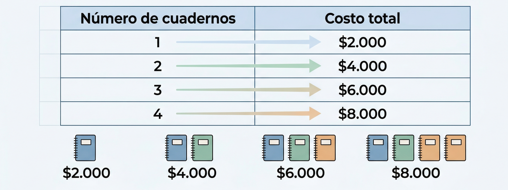
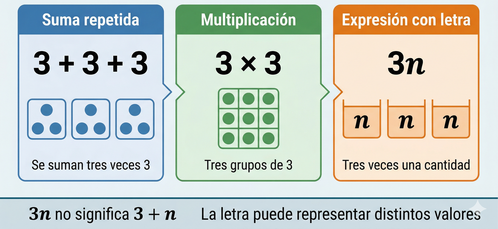
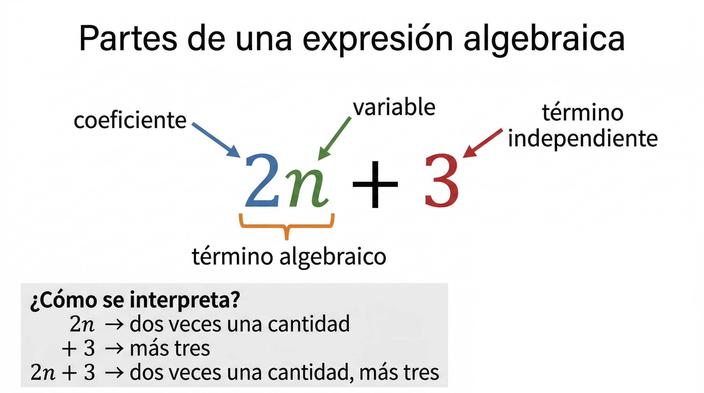
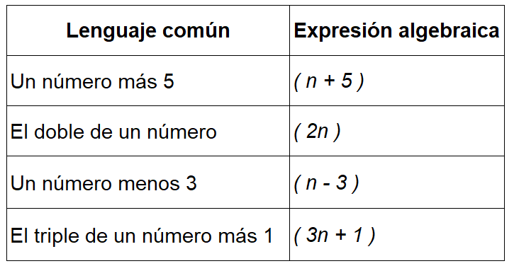
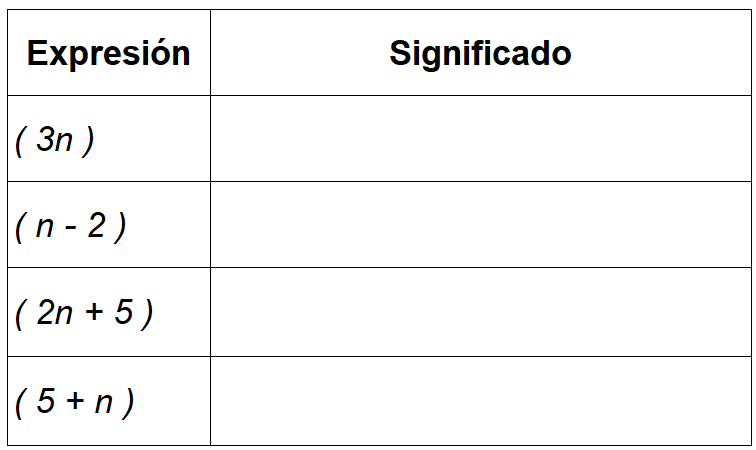
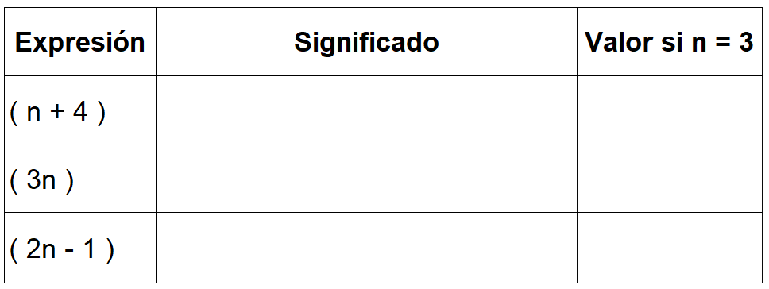

8°
EXPLORACIÓN
Situación inicial: ¿Cómo expresar lo que cambia?
En muchas situaciones de la vida diaria usamos números para representar cantidades, pero… ¿qué pasa cuando una cantidad no es fija?
Observa las siguientes situaciones:
1. Una cantidad que cambia
Un estudiante compra cuadernos.
Cada cuaderno cuesta $2.000.
Si compra:
- 1 cuaderno → paga $2.000
- 2 cuadernos → paga $4.000
- 3 cuadernos → paga $6.000
★ 1. ¿Cómo podrías representar el precio de cualquier cantidad de cuadernos sin hacer la suma uno por uno?
★ 2. ¿Qué pasaría si no sabes cuántos cuadernos va a comprar? ¿Cómo lo escribirías?
3. Escribe una forma general de representar el costo total.
2. Edad y tiempo
Ana tiene 12 años.
★ 1. ¿Cuántos años tendrá dentro de 1 año?
★ 2. ¿Y dentro de 5 años?
3. ¿Cómo representarías la edad de Ana dentro de “cualquier número de años”?
Explica tu idea con tus propias palabras.
3. Situación ambiental (PRAE)
En una jornada ambiental, un grupo siembra árboles cada día.
Día 1 → 5 árboles
Día 2 → 10 árboles
Día 3 → 15 árboles
★ 1. ¿Qué patrón observas en la cantidad de árboles sembrados?
★ 2. ¿Cómo representarías la cantidad de árboles sembrados en cualquier día?
3. ¿Cómo podrías expresar esto sin escribir todos los casos?
4. Represento con símbolos
Observa:
Si tienes una cantidad cualquiera de dinero y le sumas 3, podrías escribir:
___ + 3
★ 1. ¿Qué podrías usar para representar esa cantidad desconocida?
★ 2. Escribe tres ejemplos diferentes usando letras o símbolos.
3. ¿Por qué crees que usamos letras en matemáticas?
Observa cómo cambia la cantidad y el costo. 
Reflexiona
- ¿Qué ventaja tiene usar letras en lugar de solo números?
- ¿En qué situaciones crees que esto puede ser útil?
ANALIZA
Ahora observa las siguientes formas de escribir situaciones:
1. Comparo formas de expresar
a) 3 + 3 + 3 + 3
b) 4 × 3
c) 3 × 4
★ 1. Calcula cada expresión.
★ 2. ¿Qué relación encuentras entre ellas?
3. ¿Cuál forma te parece más práctica? ¿Por qué?
2. Cuando aparece una letra
Observa:
a) 2 + 2 + 2 + x
b) 3 × 2 + x
c) 6 + x
★ 1. ¿Qué crees que representa la letra x?
★ 2. ¿Todas las expresiones representan lo mismo? Explica.
3. ¿Qué cambia cuando aparece una letra?
3. Interpretando expresiones
Analiza las siguientes expresiones:
a) 5n
b) n + 5
c) 2n + 3
★ 1. Explica con tus palabras qué podría significar cada una.
★ 2. Da un ejemplo numérico para cada caso.
3. ¿En qué se diferencian estas expresiones?
4. Analizo una afirmación
Un estudiante dice:
“Las letras en matemáticas siempre representan un número que no conocemos.”
★ 1. ¿Estás de acuerdo o en desacuerdo?
2. Da un ejemplo que apoye tu respuesta.
3. Explica tu razonamiento.
Observa con atención las diferentes formas de representar cantidades.

Reflexiono
- ¿Qué diferencia hay entre usar solo números y usar letras?
- ¿Qué tipo de situaciones se pueden representar mejor con letras?
CONOCE ALGO NUEVO
En las actividades anteriores observaste que en algunas situaciones usamos letras para representar cantidades que pueden cambiar o que no conocemos con exactitud.
Ahora vamos a organizar esas ideas utilizando un lenguaje matemático más claro y estructurado.
1. ¿Qué es una expresión algebraica?
Una expresión algebraica es una forma de representar cantidades utilizando números, letras y operaciones matemáticas.
Las letras se usan para representar valores que pueden variar.
Ejemplos:
- n + 2
- 3x
- 2n + 3
- 5a − 4
2. ¿Qué representan las letras?
Las letras en una expresión algebraica representan cantidades variables, es decir, valores que pueden cambiar.
Por ejemplo:
Si n representa el número de cuadernos, entonces:
- 2000n representa el costo total si cada cuaderno cuesta $2000.
Si x representa los años que pasan, entonces:
- 12 + x representa la edad de una persona después de cierto tiempo.
3. Partes de una expresión algebraica
Observa la expresión:
2n + 3
Esta expresión tiene partes importantes:
- 2n → término que depende de la cantidad n
- 3 → término independiente (no depende de la letra)
En 2n:
- 2 es el número que multiplica a la letra (coeficiente)
- n es la letra (variable)
Observa la siguiente expresión y sus partes.

4. Cómo interpretar expresiones algebraicas
Interpretar una expresión significa explicar con palabras lo que representa.
Ejemplos:
- 5n: cinco veces una cantidad
- n + 4: una cantidad aumentada en 4
- 3n + 2: tres veces una cantidad más 2
5. Del lenguaje común al lenguaje algebraico
Podemos traducir situaciones cotidianas a expresiones algebraicas.

6. Evaluar una expresión algebraica
Evaluar una expresión significa reemplazar la letra por un valor y calcular.
Ejemplo:
Si n = 4, entonces:
2n + 3 = 2(4) + 3 = 8 + 3 = 11
Ejemplo paso a paso
Evaluar la expresión:
3n + 2
cuando n = 5
Paso 1: Sustituir la letra
3(5) + 2
Paso 2: Resolver la multiplicación
15 + 2
Paso 3: Sumar
17
7. Ideas clave
- Las letras representan cantidades que pueden cambiar.
- Las expresiones algebraicas permiten representar situaciones de forma general.
- Se pueden interpretar, traducir y evaluar.
- No representan un solo valor, sino muchos posibles valores.
ACTIVIDADES DE APRENDIZAJE
ACTIVIDAD 1. Interpreto expresiones algebraicas
★ Nivel esencial (Obligatorio)
1. Explica con tus palabras qué significa cada expresión:
a) 4n
b) n + 6
c) 2n + 3
d) 5n − 1
2. Para cada expresión, escribe un ejemplo usando un valor para n.
Nivel intermedio
3. Relaciona cada expresión con su significado:

Nivel de profundización (Reto)
4. Si terminas antes:
Inventa una expresión algebraica y explica:
- qué representa
- en qué situación se podría usar
ACTIVIDAD 2. Traduzco del lenguaje común al algebraico
★ Nivel esencial (Obligatorio)
1. Escribe la expresión algebraica:
a) Un número más 7
b) El doble de un número
c) Un número menos 4
d) El triple de un número más 2
Nivel intermedio
2. Traduce:
a) El doble de un número menos 3
b) La mitad de un número más 5
c) Cuatro veces un número menos 1
Nivel de profundización
3. Si terminas antes:
Escribe tres situaciones de la vida cotidiana y represéntalas con expresiones algebraicas.
ACTIVIDAD 3. Evalúo expresiones algebraicas
★ Nivel esencial (Obligatorio)
1. Calcula el valor de cada expresión:
a) 2n + 3, si n = 4
b) 5n, si n = 3
c) n + 6, si n = 10
d) 3n − 2, si n = 5
Nivel intermedio
2. Evalúa:
a) 4n + 1, si n = 6
b) 2n − 3, si n = 8
c) 3n + 5, si n = 2
Nivel de profundización
Sin calcular directamente:
a) ¿Cuál es mayor: 2n o n + n? Explica.
b) ¿Siempre 3n es mayor que 2n? Justifica con ejemplos.
ACTIVIDAD 4. Aplico en contexto (PRAE)
En una jornada ambiental del colegio:
Cada grupo siembra n árboles por día.
Además, cada grupo siembra 2 árboles adicionales como compromiso ecológico.
★ Nivel esencial
1. Escribe una expresión algebraica que represente el total de árboles sembrados en un día.
2. Calcula el total si n = 5.
Nivel intermedio
3. Si participan 3 grupos, ¿cómo representarías el total de árboles sembrados?
Nivel de profundización
4. Si un grupo pierde 2 árboles (por daño), ¿cómo representarías el nuevo total?
ACTIVIDAD 5. Analizo y argumento
★ Nivel esencial
1. Explica con tus palabras:
a) ¿Qué significa que una letra represente una cantidad variable?
b) ¿Por qué es útil usar expresiones algebraicas?
Nivel intermedio
2. Da un ejemplo donde una expresión algebraica represente una situación real.
Nivel de profundización
3. Analiza la siguiente afirmación:
“Las expresiones algebraicas solo sirven en matemáticas.”
¿Estás de acuerdo o no? Justifica con argumentos.
ACTIVIDAD 6. Consolidación estructurada
Completa la siguiente tabla:

REFERENCIAS BIBLIOGRÁFICAS
Ministerio de Educación Nacional. (2017). Vamos a aprender Matemáticas 8°: Libro del estudiante. Bogotá, D.C., Colombia: Ediciones SM, S.A.
Colegio Integrado Simón Bolívar. (2026). Plan de área de Matemáticas grado 8°. Cúcuta, Colombia.
Ministerio de Educación Nacional. (2017). Vamos a aprender Matemáticas 8°: Libro del estudiante. Bogotá, D.C., Colombia: Ediciones SM, S.A.
Colegio Integrado Simón Bolívar. (2026). Plan de área de Aritmética grado 8°. Cúcuta, Colombia.